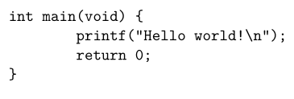
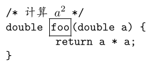
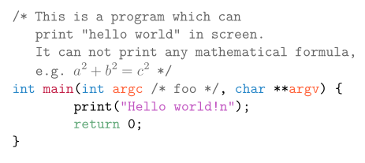

02 月 15 日
很多年后，我可能又一次不知道 Awk 的用法，就像此刻的你。
Awk 是小语言，能做很多小事。用 Awk 的人像农夫，平素话少，在一片土地上做着很多小事。文本，是 Awk 耕作的土地。人类不喜欢土地，故而不喜欢当农夫。人类也不喜欢文本，故而喜欢使用微软或金山的一系列办公软件和甲骨文公司的数据库，以取得与高楼大厦，宝马香车，西装革履，笙歌燕舞密切的联系，令人觉得先进，而在土地上耕作的生活，是落后的，徒劳的。
在现代化进程下，大多数时候，有一些小事，我们做不好，甚至不会做了，于是觉得这些都是小事，不会做又有何妨？这是不扫一屋也能扫天下的时代，只是想时常吃到让人放心的萝卜青菜，粗茶淡饭，却愈发变成奢求了。
应该庆幸，土地还在，耕种土地的方法还在。只要愿意花点时间，学会如何做耕种方面的一些小事，身心便可得到有益的滋养。这就是在这次学习 Awk 语言的过程中，我颇为认真写下这份笔记的原因，并希望许多年后，我还知道 Awk 怎么用。
本文档只是 Awk 语言的学习笔记，并非面面俱到的教程。我曾经写过一篇文章，介绍了 Awk 语言的基本用法，详见「Awk 小传」。
若需要更完整且更好的教程，请阅读 Awk 语言的三位作者所著的《The Awk programming language》。这是一本很薄的书，200 多页，第一版发布于 1988 年，第二版发布于 2023 年。这本书并非只是讲述如何使用 Awk 语言编写程序——这部分内容在全书只占不到 1/3，它更多地是基于 Awk 语言描述了数据库、虚拟机、编译器以及排序算法等计算机科学中的基本原理。在国内，不仅 Awk 语言长期被低估和冷落，这本书则更是被低估和冷落，出版社从未组织翻译。该书的第一版，近年有爱好者翻译并公开，详见「https://github.com/wuzhouhui/awk」。
GNU 所实现的 gawk，其文档「https://www.gnu.org/software/gawk/manual/」内容丰富，面面俱到，在涉及 Awk 语言细节时，可作为手册查阅。
Awk 语言的解释器有多种实现，除 Awk 语言的作者实现的 awk 之外，还有 GNU 项目 gawk，运行速度很快的 mawk 以及面向嵌入式系统的 BusyBox 环境中的 awk 等。在众多 Linux 发行版中，gawk 最为常用，只有 Debian (版本 > 6.0) / Ubuntu (版本 > 12.04) 及其衍生版本的 Linux 系统默认使用 mawk。
若不清楚自己所用的 awk 是哪个实现，可执行以下命令
$ awk --version然后查看该命令的输出信息。
对于 Debian/Ubuntu 及其衍生版本的 Linux 系统，若确定 awk 并非 gawk，而是 mawk，将 gawk 设为默认 awk 最简单的方法是：
$ sudo apt remove mawk
$ sudo apt install gawk若希望保持多个不同的 awk 实现，可使用以下命令选择 gawk 个作为默认 awk：
$ sudo update-alternatives --config awk更推荐 gawk 作为默认 awk 的原因是，gawk 对 Awk 语言进行了扩展，使得 Awk 语言在处理文本时更为简便。本文档中出现的 Awk 程序皆面向 gawk，但是尽量保持与 mawk 的兼容并同时指出 gawk 对 Awk 语言的扩展之处。
使用 Awk 语言编写的每个程序（脚本），都假设有一份要处理的文本，故而 Awk 程序通常用以下方式执行：
$ awk -f 脚本 文本文件实际上，每个 Awk 程序都可以组织成以下形式：
BEGIN {...}
模式 {动作}
END {...}其中，模式 {动作} 部分用于处理文本，而
BEGIN 和 END
块的运行时机分别是处理文本之前和结束。
倘若只在 BEGIN 块中写一些代码，Awk
脚本便可在无文本要处理的情况下得以运行，例如以下 Awk 脚本
hello.awk：
BEGIN {
print "Hello world!"
}执行 hello.awk 的命令是
$ awk -f hello.awk
Hello world!也可以将 Awk 程序写成 Shell 脚本的形式。例如，上述 Awk 语言的 Hello world 程序，可改写为 Bash 脚本 hello.sh：
#!/bin/bash
awk 'BEGIN {
print "Hello world!"
}'以下命令可为 hello.sh 添加可执行权限（让该脚本可以像程序一样运行的权限）并运行它：
$ chmod +x hello.sh
$ ./hello.sh
Hello world!使用 ConTeXt（若不了解 ConTeXt，可阅读《ConTeXt
笔记》）排版含有程序源码的文档时，由于 ConTeXt 用于排版源码的命令
\starttyping ... \stoptyping
在源码渲染方面对编程语言支持的种类过少，例如不支持 C
语言，故而只能将代码中的所有文字渲染为单一颜色。例如以下 C
语言源码：
\starttyping
int main(void) {
printf("Hello world!\n");
return 0;
}
\stoptyping上述代码对应的 ConTeXt 排版结果如下图所示：

ConTeXt 提供了源码渲染机制，用户可通过
Lua 语言的 lpeg 库，对能够以 BNF（巴科斯范式）
形式描述的语言进行解析，从而实现该语言的源码渲染。这种解析方式存在一个问题，它会导致无法在
\starttyping ... \stoptyping 环境中实现 TeX
逃逸。例如，以下代码以 TeX 逃逸的方式实现了在源码中排版数学公式：
\starttyping[escape=yes]
/* 计算 /BTEX $a^2$ /ETEX */
double /BTEX\inframed{foo}/ETEX(double a) {
return a * a;
}
\stoptyping排版结果为

在很多情况下，我既需要渲染源码，也需要在源码中插入以 TeX 逃逸方式实现的排版效果，二者如何兼得呢？很简单，只需以 TeX 逃逸的方式对源码进行渲染即可。只是含有 TeX 逃逸的源码会破坏源码所属编程语言的 BNF，无法再通过语法分析的方式渲染源码。事实上，这也是 ConTeXt 的源码渲染机制与 TeX 逃逸存在冲突的根源。我想出来的方案是不必强求语法的方案，如下：
上述方案中第 2 条，特殊标记是我自行定义的标记。例如
\starttyping
/* 计算 \m{a^2} */
double \fn{foo}(double \p{a}) {
return a * a;
}
\stoptyping上述代码中的 \m{...}，\fn{...} 以及
\p{...}
便是特殊标记，分别用于表示数学公式、函数名和参数名。在源码渲染过程中，若遇到特殊标记，便将其转化为相应的
TeX 逃逸语句。下面，用 Awk 语言实现上述方案。
首先，定义颜色映射文件：
@ c-color.map #
basic_type: GreenBlue
keyword: ForestGreen
string: Fuchsia
comment: darkgray
\fn: Maroon
\t: GreenBlue
\p:OutrageousOrange
\c: darkgray
简单起见，只为关键字、字符串、注释、函数名（）、自定义类型（、函数参数名（）以及语句内嵌注释（定义了颜色。若日后需要更多的特殊标记，可对 c-color.map 进行扩充。
在 Awk 程序的 BEGIN 块读入颜色文件，将其内容转化为 Awk
数组 color，并定义 C 语言的基本类型和常见关键词：
@ c-render.awk # BEGIN { FS = ":" while (getline <"c-color.map" > 0) { gsub(/[ \t]+/, "", $1) # 去除特殊标记的前后空白字符 gsub(/[ \t]+/, "", $2) # 去除颜色名的前后空白字符 color[$1] = $2 } FS = " " basic_types = "char|double|enum|float|int|long|short|signed|struct|union|unsigned|void|const" keywords = "static|typedef|sizeof|break|case|continue|default|do|else|for|goto|if|return|switch|while" }
然后，探测 ConTeXt 源文件中源码排版区域，
@ c-render.awk # + /\\starttyping/ { typing = 1; print; next}
在源码排版区域，先对源码中的注释部分进行渲染，以防注释文本中出现与其他被渲染的元素相同的文本而被污染：
@ c-render.awk # + typing && /\/\*/ { if (!/\*\//) in_comment = 1 gsub(/\/\*.*/, "/BTEX\\color[" color["comment"] "]{&}/ETEX") $0 = gensub(/\\m{([^}]+)}/, "\\\\m{\\1}", "g") # 数学公式 print; next } typing && in_comment { if (/\*\//) in_comment = 0 gsub(/[^ \t].*/, "/BTEX\\color[" color["comment"] "]{&}/ETEX") $0 = gensub(/\\m{([^}]+)}/, "\\\\m{\\1}", "g") # 数学公式 print; next }
上述代码可对单行和多行注释进行渲染，渲染完成后，使用
next
让主循环无需执行后续的模式-动作语句，提前进入下一次循环。
接下来，渲染 C 语句及内嵌注释：
@ c-render.awk # + typing { # 渲染函数名 $0 = gensub(/\\fn{([^}]+)}/, "/BTEX\\\\color[" color["\\fn"] "]{\\1}/ETEX", "g") # 渲染函数参数类型 $0 = gensub(/\\t{([^}]+)}/, "/BTEX\\\\color[" color["\\t"] "]{\\1}/ETEX", "g") # 渲染函数参数 $0 = gensub(/\\p{([^}]+)}/, "/BTEX\\\\color[" color["\\p"] "]{\\1}/ETEX", "g") # 渲染语句内嵌入的注释 $0 = gensub(/\\c{([^}]+)}/, "/BTEX\\\\color[" color["\\c"] "]{/* \\1 */}/ETEX", "g") # 渲染字符串常量 if (/"[^"]*"/) { # 处理反斜线 gsub(/\\/, "\\backslash ") gsub(/"[^"]*"/, "/BTEX\\color[" color["string"] "]{&}/ETEX") } # 渲染基本类型 gsub("\\<(" basic_types ")\\>", "/BTEX\\color[" color["basic_type"] "]{&}/ETEX") # 渲染关键词 gsub("\\<(" keywords ")\\>", "/BTEX\\color[" color["keyword"] "]{&}/ETEX") print; next }
与渲染注释过程相似，渲染过程结束后，使用 next
让主循环提前进入下一次运转。
在遇到 \stoptyping 行时，将源码区域关闭：
@ c-render.awk # + /\\stoptyping/ { typing = 0; print; next}
对于非源码区域的内容，原样将其输出：
@ c-render.awk # + { print }
至此，支持在 ConTeXt 源码排版环境中渲染 C 语言源码的 Awk 脚本完成。
使用 orez 工具 从本文档（假设为 awk-notes.orz）中提取 c-color.map 和 c-render.awk 文件：
$ orez -t awk-notes.orz -e "c-color.map"
$ orez -t awk-notes.orz -e "c-render.map"将以下 ConTeXt 源文件 foo.tex 作为示例，
\usecolors[crayola]
\starttext
\starttyping[escape=yes]
/* This is a program which can
print "hello world" in screen.
It can not print any mathematical formula,
e.g. \m{a^2 + b^2 = c^2} */
int \fn{main}(int \p{argc} \c{foo}, char **\p{argv}) {
print("Hello world!\n");
return 0;
}
\stoptyping
\stoptext测试 c-render.awk 脚本：
$ awk -f c-render.awk foo.tex > bar.tex
$ context bar.tex所得排版结果如下图所示：

源码排版区域所使用的特殊标记，若有删除需求，可通过以下脚本实现：
@ c-demark.awk # /\\starttyping/ { typing = 1; print; next} typing { $0 = gensub(/\\m{([^}]+)}/, "\\1", "g") $0 = gensub(/\\fn{([^}]+)}/, "\\1", "g") $0 = gensub(/\\t{([^}]+)}/, "\\1", "g") $0 = gensub(/\\p{([^}]+)}/, "\\1", "g") $0 = gensub(/\\c{([^}]+)}/, "\\1", "g") if (/"[^"]*"/) { gsub(/\\backslash[ \t]*/, "\\") } print; next } /\\stoptyping/ { typing = 0; print; next} { print }
上一节所写的脚本，频繁使用了 gawk 内置的字符串替换函数
gsub 和 gensub，常用的还有
sub。使用 Awk
解决各种文本处理问题，必须熟悉这三个函数的用法。
sub 函数接受 3
个参数。第一个参数正则表达式。第二个参数是替换文本。第三个参数是可选的，即目标字符串，若未提供，sub
函数会将当前读入的一行文本 $0 作为该参数。例如，以下 Awk
脚本可去除文件中任何一行的前导空白字符：
{ sub(/^[ \t]*/, ""); print }上述代码与以下代码等价
{ sub(/^[ \t]*/, "", $0); print $0 }例如，对于 foo.txt 文件：
a
b
c执行以下命令
$ awk '{ sub(/^[ \t]*/, ""); print }' foo.txt输出为
a
b
c未向 print 函数提供参数时，它会打印
$0。始终都要记住，$0
是当前正在处理的文本行，在
sub、gsub、gensub 以及
print 函数中，它可以作为默认的输入参数，使得 Awk
代码更为简约，当然在不熟悉 Awk
语言的情况下，也会更让人觉得难懂。不必为此苛责 Awk
语言不友好，不直观，毕竟任何一种语言都有许多初学者不明就里的惯用法。
上述代码中，sub 从 $0
中搜索第一次与正则表达式 /^[ \t]*/
匹配的部分，将其替换为空字符串。/^[ \t]*/
表示以一个或多个（*）空格或制表符（\t）作为开头（^）。关于正则表达式，我无力讲太多，因为关于它的知识足以写一本
700 多页的书。我建议在实际问题中去学习它的用法。需要注意的是，在 Awk
语言中，正则表达式可以写成 /.../
的形式，也可以写为字符串的形式，例如 "^[ \t]*"。
sub 只能替换目标字符串中第一次与正则表达式匹配的部分，而
gsub 和 gensub
可以替换目标字符串中所有与正则表达式匹配的部分。gawk 实现的这三个
sub 函数，有着其他 Awk
语言的实现所不具备的功能，即正则表达式匹配过程中的捕获功能。例如，对于上述的
foo.txt，以下示例可为文件中每一行被捕获的部分增加花扩号：
$ awk '{ sub(/[^ \t]+/, "{&}"); print }' foo.txt
{a}
{b}
{c}上述代码中的正则表达式 /[^ \t]+/
表示一个或多个非空白字符，sub
函数匹配到的部分，在替换文本中表示为 &。
现在，有文件 bar.txt：
A B C
a b c
1 2 3以下命令使用 gsub 函数，为每个字符都增加花扩号：
$ awk '{ gsub(/[^ \t]+/, "{&}"); print }' bar.txt
{A} {B} {C}
{a} {b} {c}
{1} {2} {3}gensub 函数与 gsub
相似，能够替换目标字符串中所有与正则表达式匹配的部分，但是扩展了捕获功能。gensub
在正则表达式中可使用 (...)
设置捕获区域，且捕获区域可以是多个，在替换文本中，使用
\1，\2 …
依序获得每个捕获区域匹配的文本，例如
$ awk '{ print gensub(/([^ \t]+)[ \t]+(.*)/, "{\\1} {\\2}", "g") }' bar.txt
{A} {B C}
{a} {b c}
{1} {2 3}对于目标字符串，上述正则表达式中的 ([^ \t]+)
用于捕获一个或个非空白字符构成的文本，[ \t]+ 用于匹配 1
个或多个空白字符构成的文本，而 (.*)
用于捕获剩下的所有文本。gensub
第三个参数用于选择与正则表达式第 n 次匹配的文本参与替换，该参数为 “g”
表示与正则表达式匹配的文本全部参与替换。gensub 第 4
个参数是目标字符串，若未提供，则该参数为
$0。需要注意的是，gensub 与 sub
和 gsub
还有一点不同，它不修改目标字符串，而是返回替换结果，故而上例直接将其结果作为
print 的参数。还需要注意的是，获取捕获区域文本的符号
\1，\2，…，在 gensub 中需要对
\ 进行转义，故而形式是
\\1，\\2，…倘若未对 \ 转义，awk
会认为像 \1 这样的形式是对 1 进行转义，结果为
1。
标准的 Awk 实现，没有 gensub，另外 sub 和
gsub 皆不具备捕获功能。若使用标准 Awk
语言实现与以下命令等价的功能
$ awk '{ sub(/^[ \t]*/, ""); print }' foo.txt需要使用 match
函数进行文本匹配，获得与正则表达式匹配的文本的开始位置和文本长度。awk
解释器维护的全局变量 RSTART 和
RLENGTH，它们分别表示与正则表达式匹配的文本的开始位置和文本长度，由
match 函数予以设定。基于这两个全局变量，使用
substr 提取文本，从而模拟捕获。例如
{
if (match($0, /^[ \t]*/)) {
print substr($0, RSTART + RLENGTH)
}
}执行以下命令，便可消除 foo.txt 中每一行的前导空白：
$ awk '{
if (match($0, /^[ \t]*/)) {
print substr($0, RSTART + RLENGTH)
}
}' foo.txt
a
b
c基于 match 和 substr 也可以模拟
gsub，但是需要借助循环结构，逐步消解目标字符串，每一步都获得一个匹配结果并对其进行处理。在标准
Awk 实现中模拟 gensub 会更为困难。从应用 Awk
语言解决问题的角度，没必要为难自己，建议使用 gawk，让其他 Awk
实现安其天命。
最后，观察上一节的 Awk 代码，在 gensub
的替换文本参数中，出现了 \\\\color
的形式，虽然它对应的替换后的文本是
\corlor，但是在参数中必须写成至少 4 个
\，否则替换后的文本就是
color。原因是，gensub
的参数会被多次处理，每次处理便会丢失一个用于逃逸的
\，详情见「More
about ‘’ and ‘&’ with sub(), gsub(), and
gensub()」，但是，对此也无需过于严肃，在实践中，尝试几次便可获得够用的经验了。